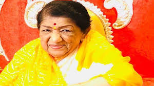

Lata Mangeshkar ji

Lata Mangeshkar (1929-2022)
A short Biography of Lata Mangeshkar
- Lata Mangeshkar (born as Hema Mangeshkar;28 september 1929-6 February 2022)
- Lata Mangeshkar Ji was born in a Maharashtrian Brahmin family.
- Her father, Deenanth Mangeshkar, was a classical singer and theatre actor.
- Her mother, Shevanti(later renamed Shudhamati), a Gujarati woman from Thalner, Bombay Presidency (now in northwest Maharashtra), was Deenanath's second wife.
- She was an Indian playback singer and occasional music composer
- Lata Mangeshkar Ji recieved her first music lesson from her father.At the age of five, she started to work as an actress in her father's musical plays.
- She was the eldest child in the family.
- She moved to Mumbai in 1945 when Master Vinayak's company moved its headquarters there.
- she is widely considered to have been one of th gratest and most influential singers in india.
- Lata Mangeshkar composed music for the first time in 1955 for the Marathi movie Ram Ram Pavhane.
- She won Maharashtra State Goverment's Best Director Award for the film Sadhi Manase. The song "Airanichya Deva Tula" from the same film recieved best song award.
- Lata Mangeshkar Ji has produced four films.
- On 8 January 2022, Lata Mangeshkar tested positive for COVID-19 with mild symptomps and was admitted to Breach Candy Hospital's intensive care unit in Mumbai.
- The Goverment of India announced a two-day period of national mourning and that the national flag will fly at half-mast from 6 to 7 February throughout India out of respect for her.
"You Will Be Missed"